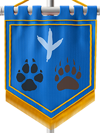

Idiomas
Os idiomas de Launari se diversificam de acordo com as espécies e suas localidades. O seu personagem pode saber 2 idiomas, comum e a segunda pode ser originária de acordo com a espécie de sua escolha ou com as suas origens, o que preferir. Os idiomas são:
| Idioma | Descrição | Falado | Baro | Um idioma bruto, falado com rosnados e urros. Não possui escrita. | Em Riuna | Comum | Um idioma simples, bem articulado e cheio de expressões. Sua escrita é bem formada, composta por palavras de fácil pronúncia e entendimento. | Em todo o continente | Drakar | Um idioma grave e ressonante, aqueles que pronunciam em Drakar soam bem maiores do que realmente são, suas palavras possuem muitas vogais arrastadas e vibratos longos. | Por descendentes Dracônicos. | Elera | Um idioma falado para dentro, com vogais tímidas e “S” puxado. Sua escrita são glifos e pontos escritos de baixo para cima. | Por Vorterras | Garatar | Um idioma repleto de tremas e consoantes, sua pronúncia é ríspida, enfatizando os “R”. Sua escrita são símbolos grosseiros que lembram desenhos de homens das cavernas. | Yrgal, Gnork e Kalos | Jotun | Um idioma arrastado e pesado, lembrando um pouco o nórdico antigo. Sua escrita são runas grosseiras lembrando as escritas vikings. | Acharnes e Rafna | Kidera | Um idioma antigo, esquecido no tempo, falado por aqueles que um dia foram os guardiões de Launari. Sua escrita é desconhecida. | Dídymoi | Laurela | Um idioma complexo, formado por palavras compostas e símbolos mágicos. Sua pronúncia lembra a conjuração de uma magia. | Thena | Lavarro | Um idioma chulo, suas palavras são gritadas e cuspidas, toda frase possui pelo menos 2 xingamentos. Sua escrita são rabiscos tortos. | Cortul e Mifos | Luna | Um idioma exótico, sua pronúncia remete a risadas de escárnio. É escrito de trás para frente e de baixo para cima, com desenhos infantis e coloridos. | Glyda | Schiole | Um idioma suave, composto de palavras melódicas, as letras de sua escrita são desenhos belos e intrigantes. Sua fonética lembra uma canção. | Vur-Teloran | Voräla | Um idioma de pronúncia agressiva, gutural, conversas aparentam ser discussões acaloradas. Sua escrita é bonita e cartografada, apresentando letras boleadas e de cabeça para baixo. | Arthas e Acharnes |